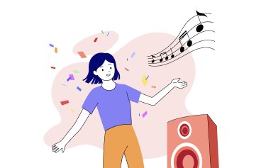

나의 성격 유형은
정열적인 재주꾼
사람을 비롯한 이 세상의 거의 모든 생명체들을 사랑해요. 그래서 정이 많다는 소리도 자주 들어요. 다재다능하고 뭐든 평균 이상은 할 줄 알아요. 다양한 분야에 열정적으로 도전하곤 하지만 하나에 진득하게 집중하는 일이 별로 없고 금세 식어 버리기도 해요.

넘치는 끼를 발산할 댄스 타임 가지기
워낙 활발한 성격을 갖고 있어 사람들 앞에 서는 것을 좋아하는 당신. 그런 당신의 끼를 마구 발산할 댄스 타임을 가져보는 건 어때요? 신나고 즐거운 마음으로 꾸준히 연습하다 보면 어느새 무대를 장악하는 자신을 발견하게 될 지도 몰라요!
행복을 구워요, 베이킹 도전하기
열정적인 재주꾼 유형은 사랑하는 사람들을 즐겁게 만드는 것을 매우 좋아해요. 남을 위해 베풀면 자신도, 아니 자신이 더 행복해진다고나 할까요. 사랑하는 이를 떠올리며 마음을 담아 베이킹에 도전해 보세요! 달달한 디저트를 만들어 여러 사람과 함께 나누면 행복이 배가 될 거예요.
즐거운 에너지로 가득 찬 문화 행사 즐기기
순수한 마음을 지닌 당신은 사람들이 즐거워하며 들떠 있는 모습을 보면 덩달아 기분이 좋아져요. 그런 당신에게는 전시회나 공연장 같은 문화 행사가 딱이랍니다. 특히 사진 촬영이 가능한 전시회나 콘서트에는 늘 사람이 붐비기 마련이죠. 사람들의 즐거운 대홧소리, 함성이 들리는 곳에서 친구 혹은 연인과 행복한 시간을 보내 보세요.